Les mots en images
Words in pictures: click a card to turn it over.Clique sur une carte pour la retourner. Écoute le mot et la phrase, puis essaie de répéter.
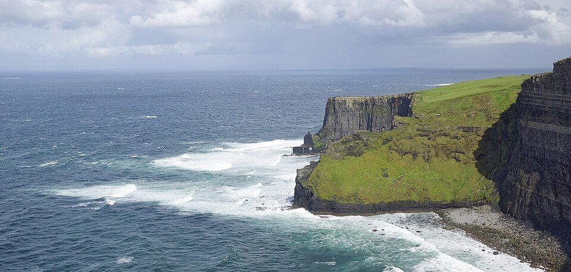
coast
L'été dernier, nous avons longé la côte irlandaise à vélo.
Last summer, we cycled along the Irish coast.
la côte (coast) ≠ le côté (side)
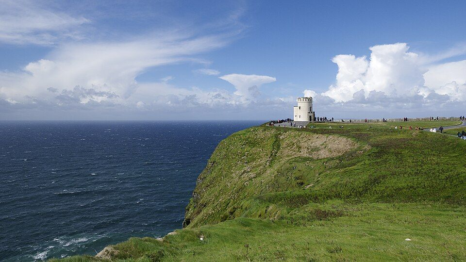
windy
Le jour où nous sommes allés aux falaises de Moher, c'était très venteux.
The day we went to the Cliffs of Moher, it was very windy.
c'était venteux = il y avait beaucoup de vent
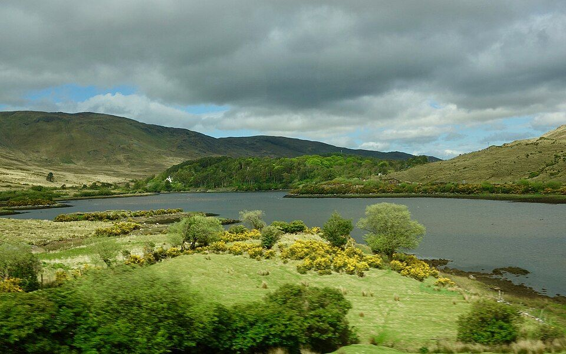
rainy
Le Connemara est souvent pluvieux : c'est pour ça qu'il est si vert !
Connemara is often rainy: that's why it's so green!
pleuvoir → il pleut, il pleuvait, il a plu
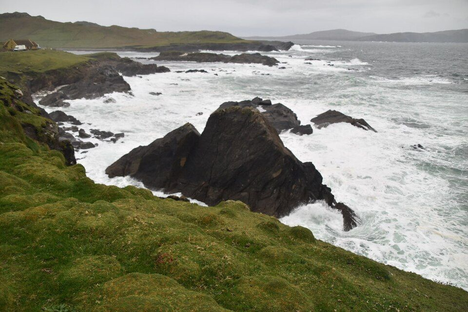
wave
Ce jour-là, les vagues de l'Atlantique étaient énormes.
That day, the Atlantic waves were huge.
faire des vagues = to make waves
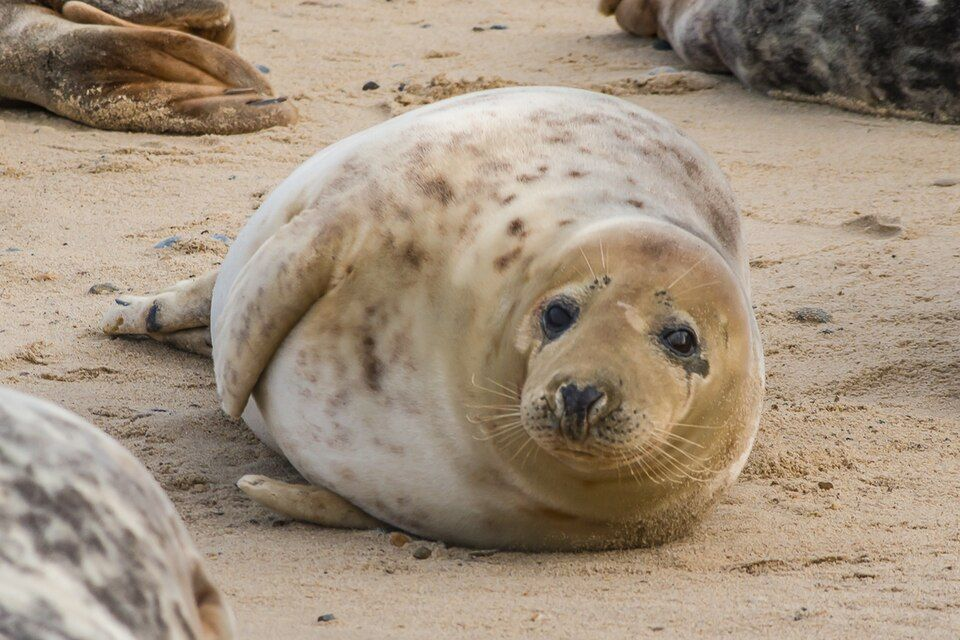
seal
Venez vite ! Nous venons de voir un phoque sur la plage !
Come quickly! We've just seen a seal on the beach!
venir de + infinitif = to have just done
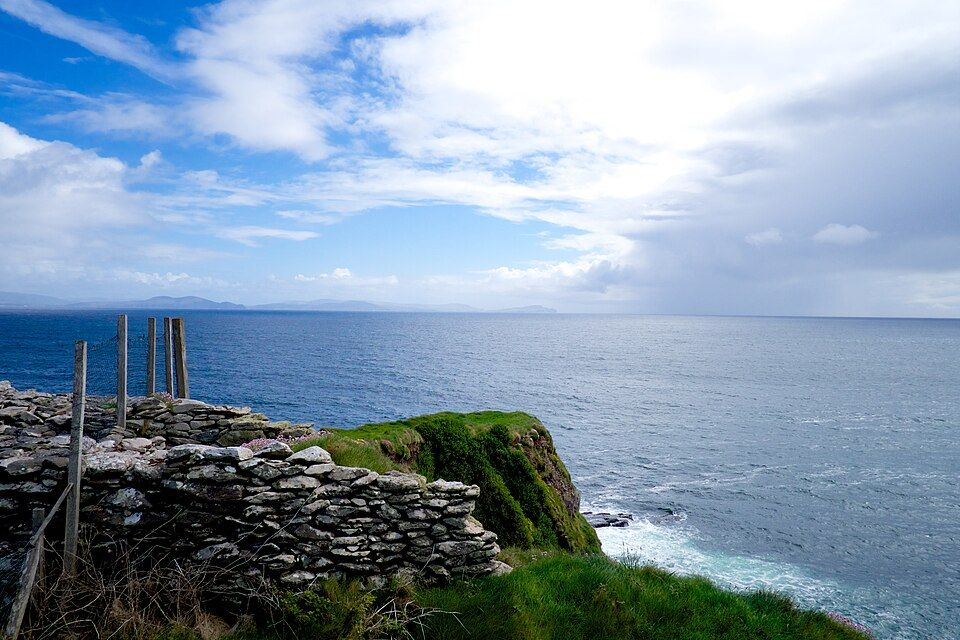
walk
Après avoir fait une longue promenade, nous avons bu un chocolat chaud.
After going for a long walk, we had a hot chocolate.
faire une promenade = to go for a walk
stay
Pendant mon séjour en Irlande, je logerai dans une auberge de jeunesse.
During my stay in Ireland, I'll stay in a youth hostel.
le séjour = also the living room
to welcome
Les capybaras accueillent tous les animaux avec calme.
Capybaras welcome all animals calmly.
j'accueille, nous accueillons, ils accueillent
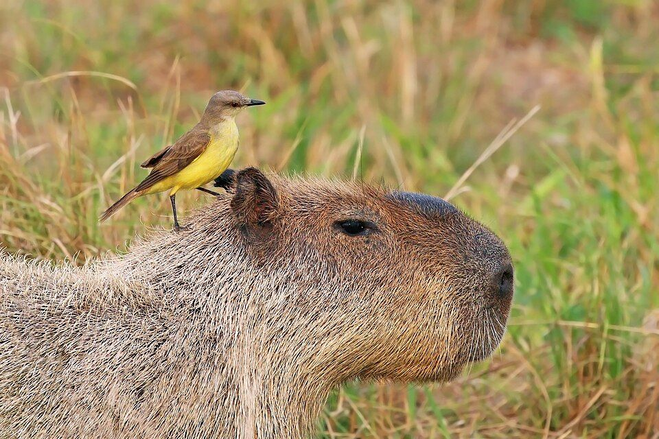
trust
Les oiseaux font confiance aux capybaras : ils se posent sur leur dos.
Birds trust capybaras: they land on their backs.
faire confiance à quelqu'un = to trust someone
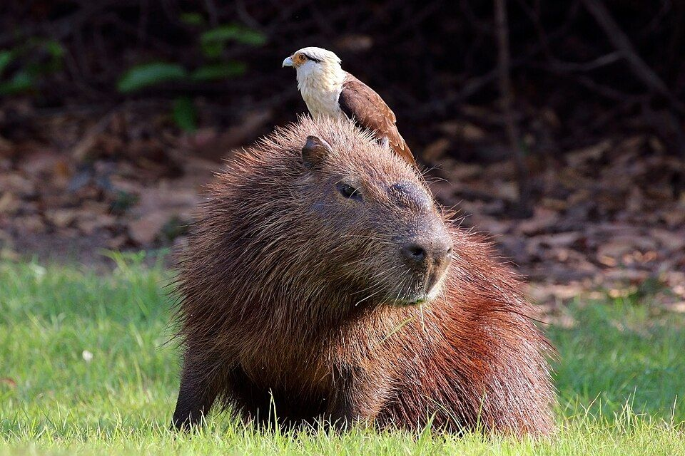
bird
Un petit oiseau s'est posé sur la tête du capybara.
A little bird landed on the capybara's head.
un oiseau → des oiseaux
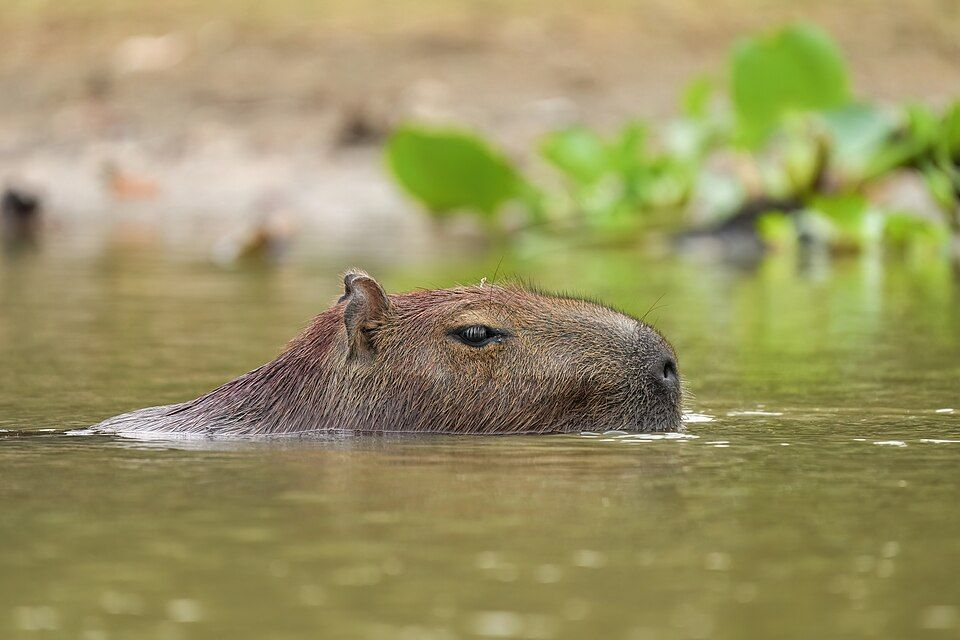
famous
Depuis quelques années, le capybara est célèbre sur Internet.
For a few years now, the capybara has been famous on the internet.
depuis + présent = for / since
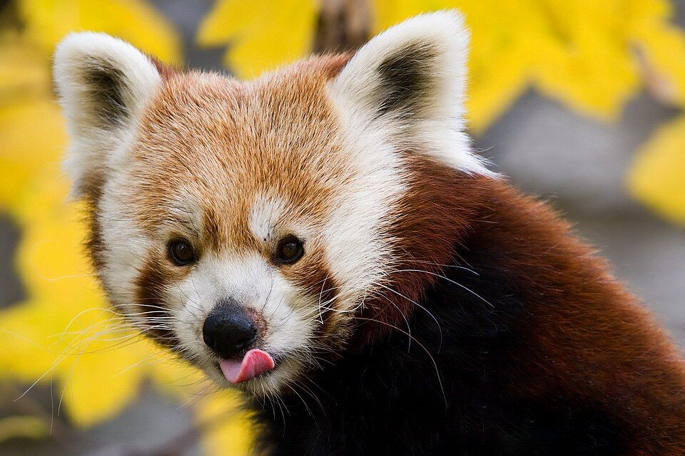
desire
Ce matin-là, le panda roux avait envie de dormir toute la journée.
That morning, the red panda felt like sleeping all day.
avoir envie de = to feel like, to want
to savour
Le panda roux déguste des pousses de bambou.
The red panda is savouring bamboo shoots.
déguster = manger avec plaisir
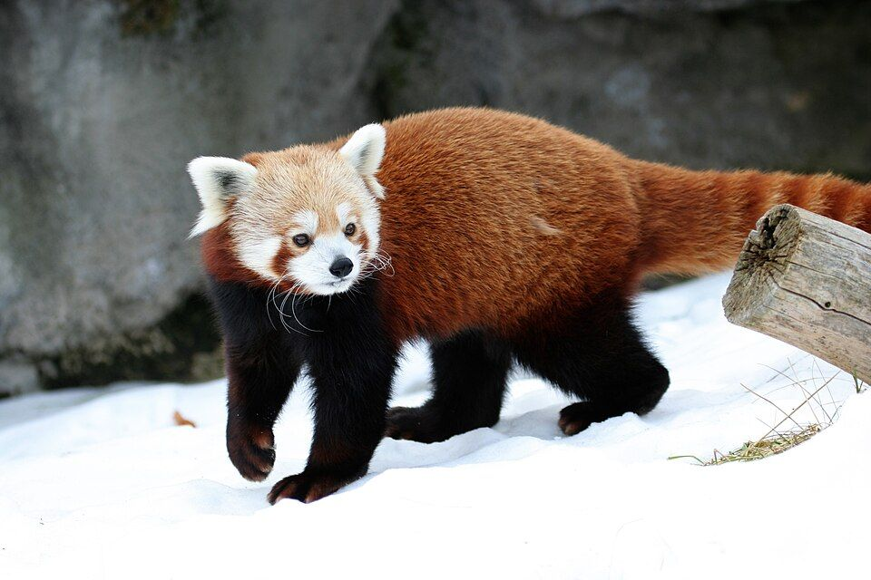
to hide
Les pandas roux se cachent dans les arbres.
Red pandas hide in the trees.
cacher quelque chose · se cacher (oneself)
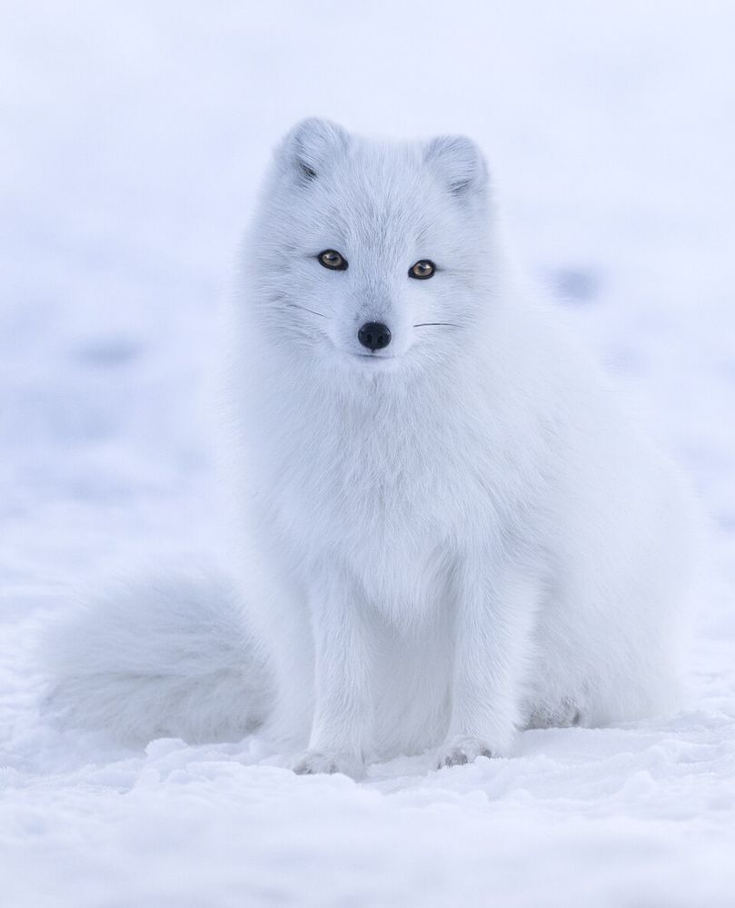
to get lost
Le renard blanc s'est égaré dans la neige.
The white fox got lost in the snow.
s'égarer = se perdre
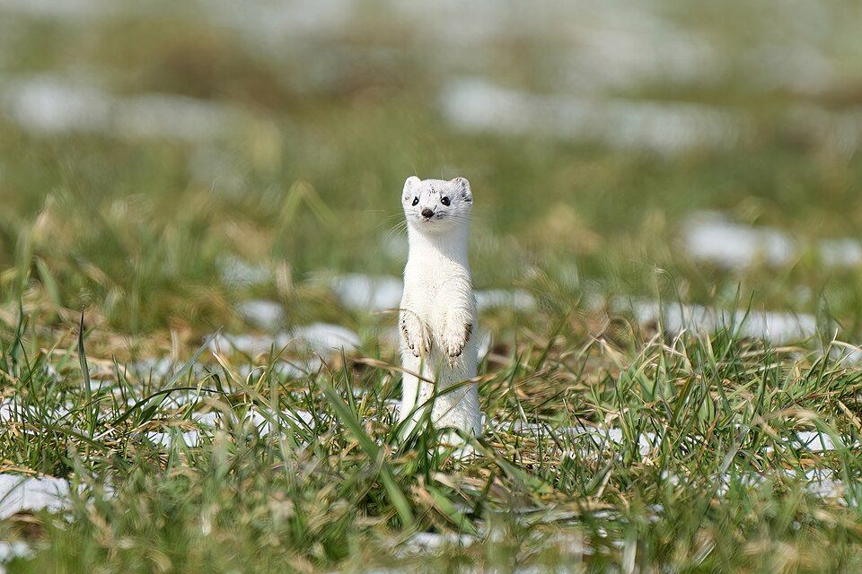
alone
L'hermine vit seule : elle n'aime pas la compagnie.
The stoat lives alone: it doesn't like company.
seul(e) = alone ; only
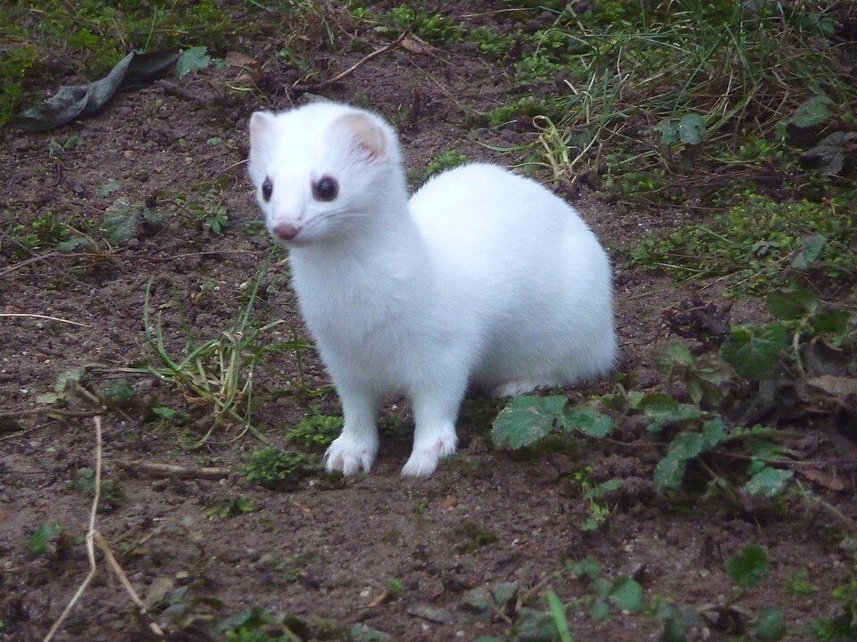
to fall
Quand la neige tombe, le pelage de l'hermine devient blanc.
When the snow falls, the stoat's coat turns white.
tomber → je suis tombé(e)
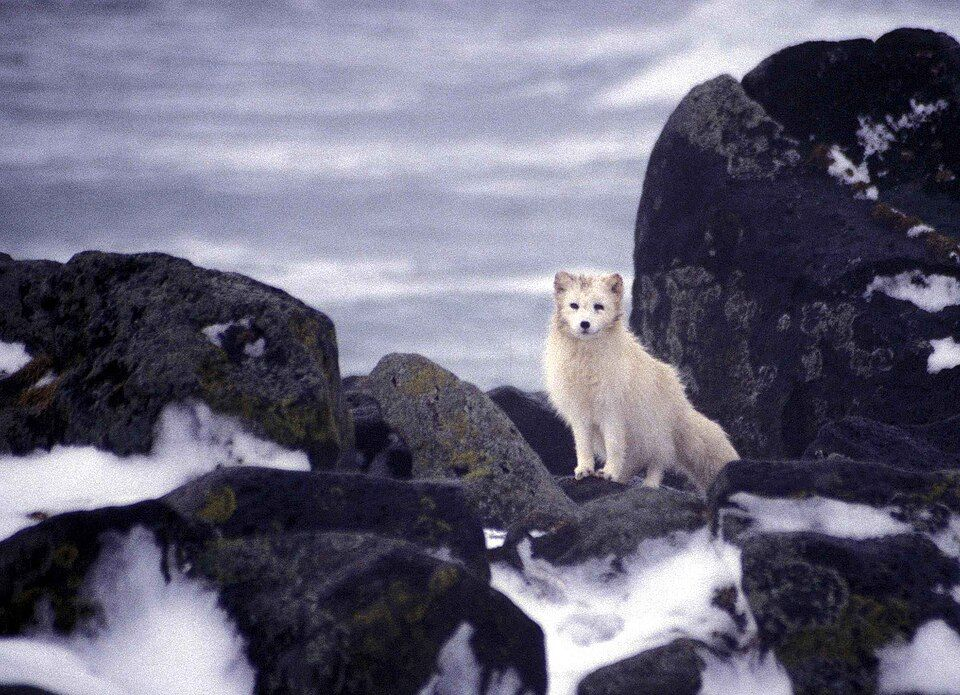
dream
Un jour, j'irai voir des renards blancs : c'est mon rêve !
One day, I'll go and see white foxes: it's my dream!
rêver de = to dream of
Tous les mots
All the words, sorted by theme.Écoute chaque mot. Pour te tester, cache l'anglais : clique ensuite sur une ligne pour voir la traduction.
Raconter un voyage : les petits mots
16 mots| d'abord | firstly | ||
| ensuite | next | ||
| puis | then | ||
| enfin | finally, at last | ||
| plus tard | later | ||
| d'habitude | usually | ||
| une fois | once | ||
| toujours | always | ||
| le | lendemain | the next day | |
| heureusement | fortunately | ||
| à cause de | because of | ||
| puisque | since | ||
| sauf | except | ||
| plutôt | rather | ||
| même | even ; same | ||
| également | also, equally |
Partir et se loger
13 mots| l' | auberge de jeunesse (f) | youth hostel | |
| loger | to stay | ||
| le | séjour | stay, visit | |
| à l'étranger | abroad | ||
| là-bas | over there | ||
| le / la | propriétaire | owner | |
| l' | endroit (m) | place | |
| le | coin | area | |
| la | côte | coast | |
| le | bâtiment | building | |
| le / la | voisin(e) | neighbour | |
| accueillir | to welcome | ||
| compter sur | to count on |
En ville
8 mots| la | boulangerie | baker's shop | |
| la | boucherie | butcher's shop | |
| la | charcuterie | delicatessen | |
| le | commissariat | police station | |
| trop de monde | too many people | ||
| le | bruit | noise | |
| cher / chère | expensive | ||
| payer | to pay for |
Loisirs et découvertes
15 mots| découvrir | to discover | ||
| goûter | to taste | ||
| déguster | to savour, to taste | ||
| s'amuser | to have fun | ||
| la | promenade | walk | |
| la | voile | sailing | |
| l' | aviron (m) | rowing | |
| la | plongée | diving | |
| les | sports d'hiver (m) | winter sports | |
| la | lecture | reading | |
| le | roman | novel | |
| tricoter | to knit | ||
| essayer | to try | ||
| tenter | to tempt | ||
| remporter | to win |
La météo et la nature
11 mots| pleuvoir | to rain | ||
| pluvieux / pluvieuse | rainy | ||
| venteux / venteuse | windy | ||
| ensoleillé(e) | sunny | ||
| la | vague | wave | |
| le | phoque | seal | |
| l' | oiseau (m) | bird | |
| le | canard | duck | |
| le | navire | ship | |
| cacher | to hide | ||
| s' | égarer | to get lost, to wander off |
Sentiments et petits soucis
23 mots| agréable | nice | ||
| célèbre | famous | ||
| meilleur(e) | best | ||
| propre | own ; clean | ||
| sale | dirty | ||
| minable | pathetic | ||
| déçu(e) | disappointed | ||
| le | souci | worry | |
| l' | inconvénient (m) | disadvantage | |
| oublier | to forget | ||
| le | porte-monnaie | purse | |
| fonctionner | to work (machine) | ||
| obliger | to force | ||
| tomber | to fall | ||
| manquer | to miss | ||
| espérer | to hope | ||
| réussir | to succeed | ||
| la | confiance | trust | |
| l' | envie (f) | desire | |
| le | rêve | dream | |
| le | cadeau | present | |
| seul(e) | alone ; only | ||
| Quelle barbe ! | How boring! |
Exercices
Exercises: after each answer you will see and hear the correct sentence with its English translation.Après chaque réponse, tu vois et tu entends la bonne phrase, avec sa traduction en anglais.
Le bon mot
Choisis le mot qui complète la phrase.
Choose the word that completes the sentence.- 1
Pour dormir pas cher, nous avons logé dans une …… de jeunesse.
Pour dormir pas cher, nous avons logé dans une auberge de jeunesse.
To sleep cheaply, we stayed in a youth hostel.
- 2
J'ai perdu mon …… : je n'ai plus d'argent pour payer le bus !
J'ai perdu mon porte-monnaie : je n'ai plus d'argent pour payer le bus !
I've lost my purse: I have no money left to pay for the bus!
- 3
Quand on perd quelque chose, on va au …… pour faire une déclaration.
Quand on perd quelque chose, on va au commissariat pour faire une déclaration.
When you lose something, you go to the police station to report it.
- 4
La chambre était …… : il y avait de la poussière partout !
La chambre était sale : il y avait de la poussière partout !
The room was dirty: there was dust everywhere!
- 5
Le distributeur de billets ne …… pas, alors je n'ai pas pu retirer d'argent.
Le distributeur de billets ne fonctionnait pas, alors je n'ai pas pu retirer d'argent.
The cash machine wasn't working, so I couldn't take out any money.
- 6
Le soir, j'aime la …… : en ce moment, je lis un roman policier.
Le soir, j'aime la lecture : en ce moment, je lis un roman policier.
In the evening I love reading: at the moment I'm reading a detective novel.
- 7
Il y avait …… sur la plage : impossible de trouver une place !
Il y avait trop de monde sur la plage : impossible de trouver une place !
There were too many people on the beach: impossible to find a spot!
- 8
J'étais …… : le concert a été annulé à la dernière minute.
J'étais déçue : le concert a été annulé à la dernière minute.
I was disappointed: the concert was cancelled at the last minute.
Contraires et synonymes
Choisis la bonne réponse.
Choose the right answer.- 1
Quel est le contraire de « sale » ?
propre
What is the opposite of « sale » (dirty)? → propre (clean)
- 2
Quel est le contraire de « pluvieux » ?
ensoleillé
What is the opposite of « pluvieux » (rainy)? → ensoleillé (sunny)
- 3
Quel est le contraire de « d'abord » ?
enfin
What is the opposite of « d'abord » (firstly)? → enfin (finally)
- 4
Quel mot a le même sens que « s'égarer » ?
se perdre
Which word means the same as « s'égarer »? → se perdre (to get lost)
- 5
Quel mot a le même sens que « déguster » ?
goûter avec plaisir
Which word means the same as « déguster »? → to taste with pleasure
- 6
Quel est le contraire de « heureusement » ?
malheureusement
What is the opposite of « heureusement » (fortunately)? → malheureusement (unfortunately)
Mon séjour en Irlande
Complète l'histoire avec le verbe au bon temps.
Complete the story with the verb in the right tense.- 1
L'été dernier, je (partir · passé composé) en Irlande avec ma meilleure amie.
L'été dernier, je suis partie en Irlande avec ma meilleure amie.
Last summer, I went to Ireland with my best friend.
- 2
D'abord, nous (loger · passé composé) dans une auberge de jeunesse à Galway.
D'abord, nous avons logé dans une auberge de jeunesse à Galway.
First, we stayed in a youth hostel in Galway.
- 3
Il (pleuvoir · imparfait) presque tous les jours, mais les paysages (être · imparfait) magnifiques.
Il pleuvait presque tous les jours, mais les paysages étaient magnifiques.
It rained almost every day, but the landscapes were magnificent.
- 4
Un jour, nous (découvrir · passé composé) une petite plage où il y (avoir · imparfait) des phoques !
Un jour, nous avons découvert une petite plage où il y avait des phoques !
One day, we discovered a little beach where there were seals!
- 5
Le lendemain, je (tomber · passé composé) dans une flaque d'eau. Quelle barbe !
Le lendemain, je suis tombée dans une flaque d'eau. Quelle barbe !
The next day, I fell into a puddle. How annoying!
- 6
Ensuite, nous nous (s'égarer · passé composé) dans le Connemara, mais heureusement, un fermier nous a aidées.
Ensuite, nous nous sommes égarées dans le Connemara, mais heureusement, un fermier nous a aidées.
Then we got lost in Connemara, but fortunately a farmer helped us.
- 7
Il (faire · imparfait) froid, alors nous (goûter · passé composé) un délicieux ragoût irlandais.
Il faisait froid, alors nous avons goûté un délicieux ragoût irlandais.
It was cold, so we tasted a delicious Irish stew.
- 8
Enfin, l'année prochaine, je (retourner · futur) là-bas : c'est promis !
Enfin, l'année prochaine, je retournerai là-bas : c'est promis !
Finally, next year I'll go back there: it's a promise!
Venir de, après avoir, depuis, futur et y
Complète avec la bonne forme.
Complete with the right form.- 1
Regarde ! Le capybara (venir de · présent) plonger dans la rivière.
Regarde ! Le capybara vient de plonger dans la rivière.
Look! The capybara has just dived into the river.
- 2
Nous (venir de · présent) visiter les falaises de Moher : nous sommes fatigués !
Nous venons de visiter les falaises de Moher : nous sommes fatigués !
We've just visited the Cliffs of Moher: we're tired!
- 3
Après (dormir) au soleil, le panda roux a dégusté des pousses de bambou.
Après avoir dormi au soleil, le panda roux a dégusté des pousses de bambou.
After sleeping in the sun, the red panda savoured some bamboo shoots.
- 4
Après (arriver) à Dublin, nous avons cherché notre auberge de jeunesse.
Après être arrivées à Dublin, nous avons cherché notre auberge de jeunesse.
After arriving in Dublin, we looked for our youth hostel.
- 5
J'apprends le français (for / since) cinq ans.
J'apprends le français depuis cinq ans.
I have been learning French for five years.
- 6
J'(habiter · présent) à Londres depuis toujours.
J'habite à Londres depuis toujours.
I have always lived in London.
- 7
L'été prochain, je (loger · futur) chez une famille irlandaise.
L'été prochain, je logerai chez une famille irlandaise.
Next summer, I'll stay with an Irish family.
- 8
Tu (pouvoir · futur) compter sur moi : je ne t'oublierai pas !
Tu pourras compter sur moi : je ne t'oublierai pas !
You'll be able to count on me: I won't forget you!
- 9
Tu connais Dingle ? — Oui, j'(pronom) suis allée l'année dernière.
Tu connais Dingle ? — Oui, j'y suis allée l'année dernière.
Do you know Dingle? — Yes, I went there last year.
- 10
Le Connemara ? J'(pronom) retournerai l'été prochain, puisque j'adore cet endroit.
Le Connemara ? J'y retournerai l'été prochain, puisque j'adore cet endroit.
Connemara? I'll go back there next summer, since I love that place.
Écoute et écris
Écoute le mot et écris-le, avec les accents.
Listen to the word and write it, with the accents.- 1
déçu
disappointed
- 2
plutôt
rather
- 3
le lendemain
the next day
- 4
l'auberge
the hostel
- 5
ensoleillé
sunny
- 6
le porte-monnaie
the purse
- 7
le propriétaire
the owner
- 8
également
also
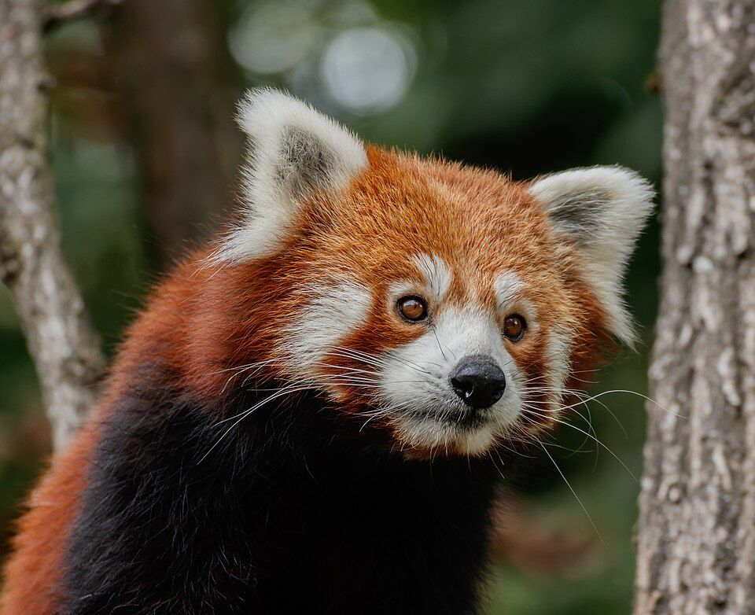
Raconte un voyage ou une journée inoubliable (8 à 10 phrases).
Tell the story of a trip or an unforgettable day (8 to 10 sentences).Essaie d'utiliser :
Ton texte est enregistré automatiquement.
À revoir
To review: the sentences you got wrong, with a link back to the word.Rien à revoir pour le moment. Bravo !